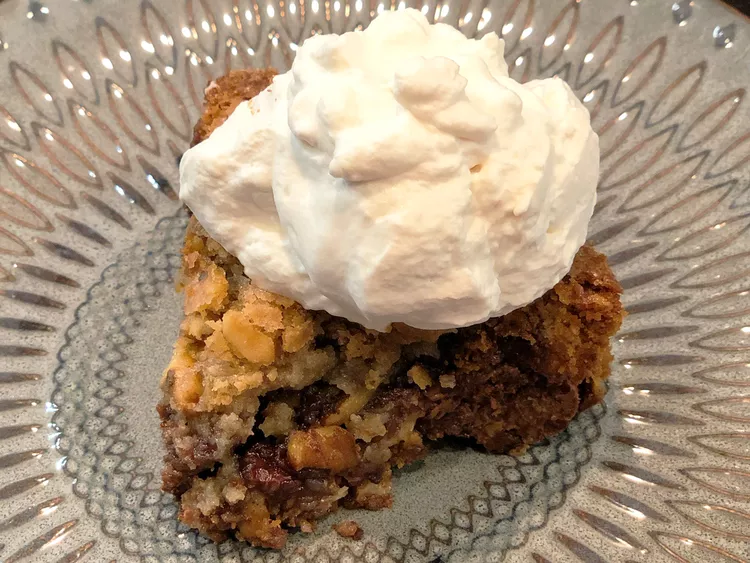

Toll House Pie

Ingredients
- 2 large eggs
- ½ cup granulated sugar
- ½ cup all-purpose flour
- ½ cup packed brown sugar
- ¾ cup butter, softened
- 1 cup NESTLE® TOLL HOUSE® Semi-Sweet Chocolate Morsels
- 1 (9 inch) frozen deep-dish pie crust, thawed
- 1 cup whipped cream, or to taste
Steps
- Preheat the oven to 325 degrees F (165 degrees C).
- Beat eggs in a large mixing bowl on high speed until foamy. Beat in flour, granulated sugar, and brown sugar
until combined. Beat in butter until smooth. Stir in chocolate morsels. Spoon mixture into pie shell.
- Bake in the preheated oven until a knife inserted halfway between the edge and center comes out clean, 55 to
60 minutes. Cool on a wire rack. Serve warm with whipped cream.